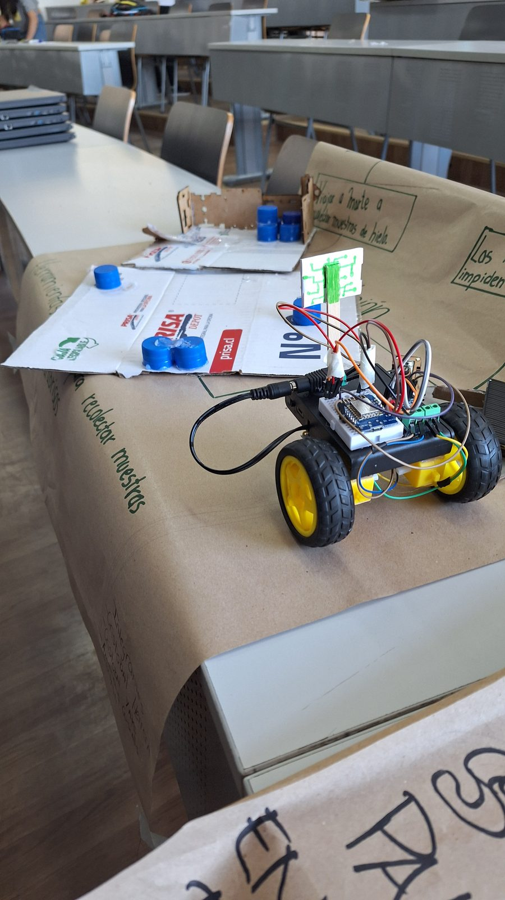
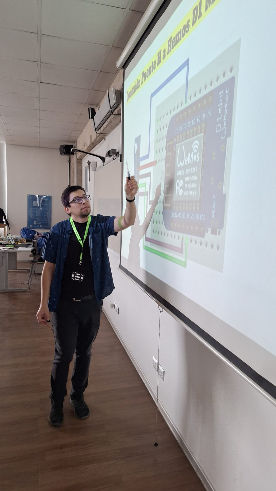
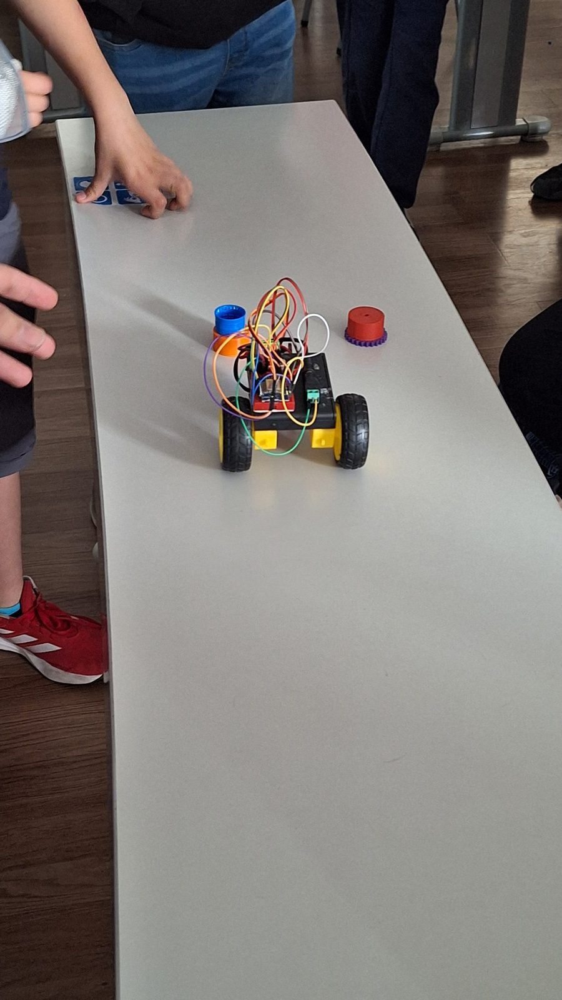
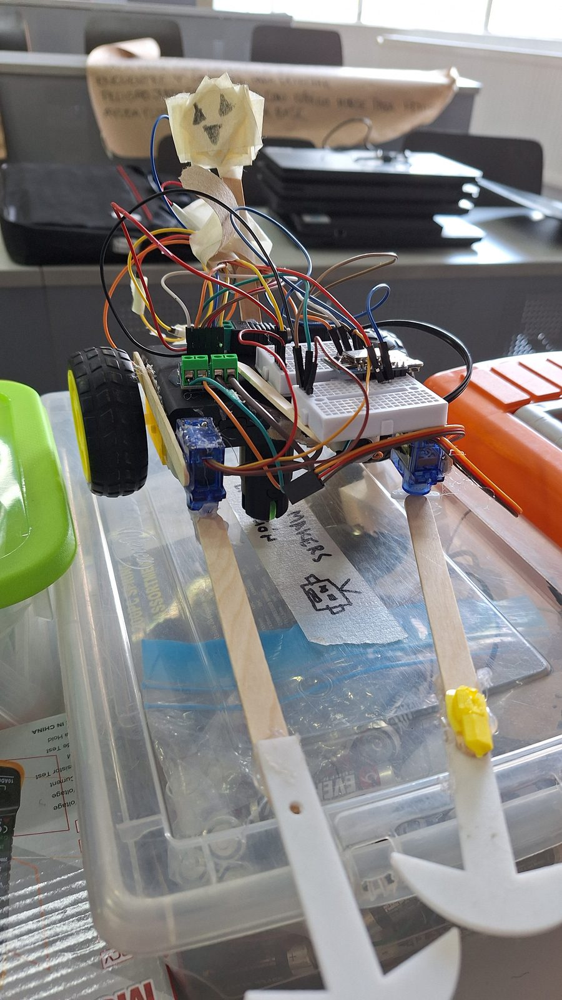
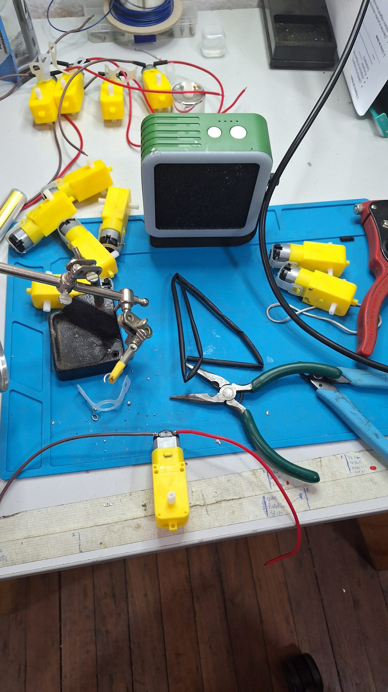
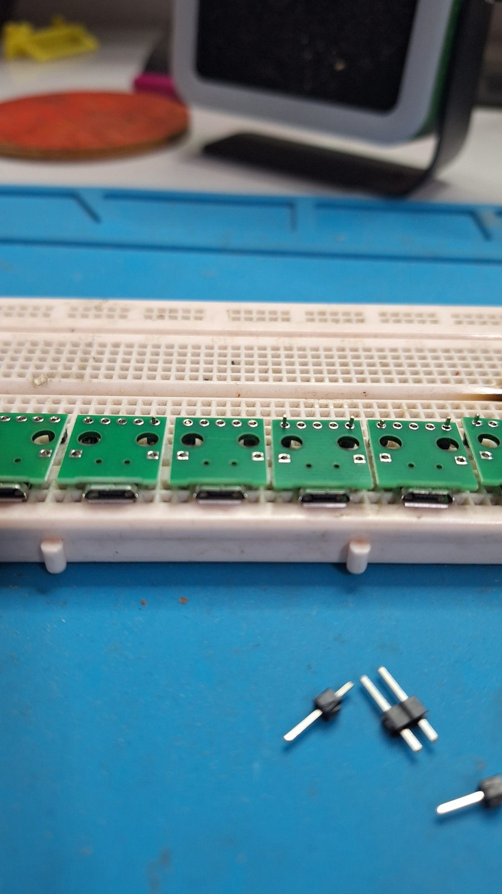
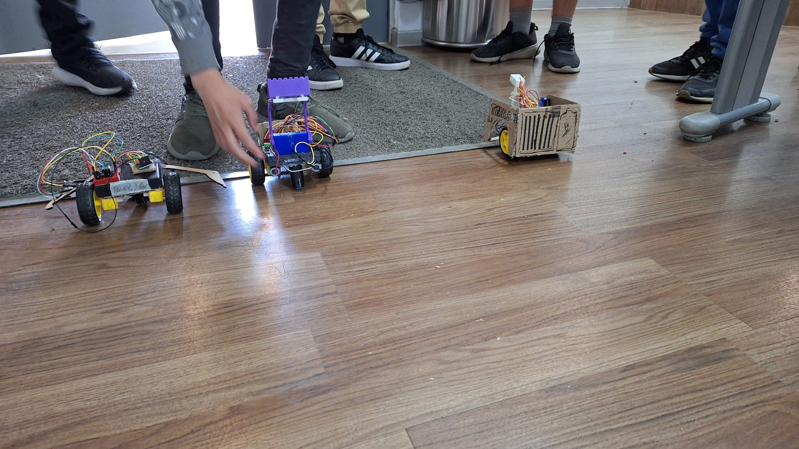
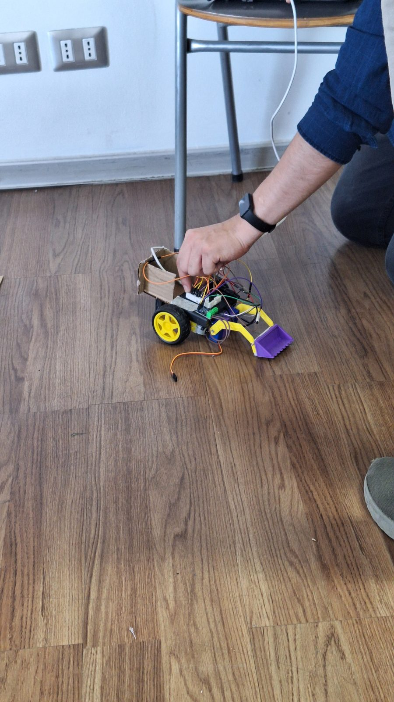

Robots Makers en Acción
Crea tu primer robot explorador
El curso donde nació el robot educativo: un explorador construido desde cero, programado en Arduino y controlado por Wi-Fi, con piezas impresas en 3D por los propios estudiantes.

Este es el curso que cambió los tres siguientes. Para poder enseñar robótica sin depender de kits comerciales caros y cerrados, junto a Elvis Andrade diseñamos y construimos un robot educativo propio: chasis, electrónica, puente H para el control de motores y firmware con control por Wi-Fi desde el navegador.
Con esa base, los estudiantes no arman un kit siguiendo instrucciones: construyen su robot desde cero, lo programan en la IDE de Arduino y diseñan en Tinkercad las piezas que necesitan (brazos, pinzas, soportes) para que su explorador resuelva la misión que ellos mismos definieron.
La primera mitad del semestre mantiene la estructura de futuros posibles y problemas cotidianos; la segunda se vuelca completamente al robot, la programación y el prototipado, hasta la feria de aprendizajes final que reúne a todos los cursos del programa.
Curso de creación propia
Propuesta, programa, metodología y material diseñados por mí.
Robot educativo desarrollado para este curso
Junto a Elvis Andrade creamos un robot educativo propio para poder dictar este curso: estructura, electrónica, control por Wi-Fi y piezas imprimibles. El mismo robot se convirtió después en la base de Misión Espacial y Robot Espacial.
Temario
- 01Presentación y formación de equiposPrograma, reglas y planificación del semestre.
- 02Futuros posibles de la humanidadDiseño especulativo como punto de partida.
- 03Problemas cotidianos del futuroDefinición de la problemática que resolverá cada robot.
- 04Programación básica e impresión 3DPrimeros pasos en la IDE de Arduino y en el modelado de piezas.
- 05Principios de impresión 3DAplicarlos a las piezas que llevará el prototipo.
- 06Primer robotEvaluación intermedia: robot funcional, papelógrafo y demostración en vivo.
- 07Prototipar las solucionesDesarrollo de las propuestas presentadas en la evaluación intermedia.
- 08Presentación de avancesEstado del robot y de la solución frente al curso.
- 09Mejora de la propuestaAjustes mecánicos, electrónicos y de programación.
- 10Retroalimentación entre paresCada equipo evalúa el trabajo de los demás.
- 11Segunda ronda de mejorasÚltimas correcciones antes del cierre.
- 12Preparación de la exposiciónDiscurso, material gráfico y demostración.
- 13Cierre del proyectoPresentación del proyecto final para evaluación.
- 14Feria de aprendizajesMuestra conjunta con todos los cursos del programa.
Registro








